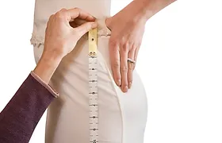
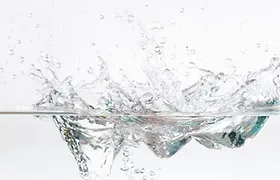
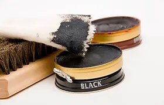

.webp)
BECOME A MEMBER and get 10% OFF your first order
WASH & FOLD 5 shirts for $15
TAILORING
I'm a Paragraph. Click here to add your own text and edit me. It’s easy. Just click “Edit Text” or double click me and you can start adding your own content and make changes to the font. Feel free to drag and drop me anywhere you like on your page. I’m a great place for you to write more. Tell a story and let your users get to know you.
more information >
ECO FRIENDLY
We are committed to the environment: • No use of harmful toxic chemicals • Safe for you and your family • Safe for the environment • EPA approved • Only non-toxic substances such as water, biodegradable soap and steam are used • Garments look cleaner, last longer, feel softer, look brighter and smell fresher • No allergic reactions
SHOE SHINE & REPAIR
I'm a Paragraph. Click here to add your own text and edit me. It’s easy. Just click “Edit Text” or double click me and you can start adding your own content and make changes to the font. Feel free to drag and drop me anywhere you like on your page. I’m a great place for you to write more. Tell a story and let your users get to know you.
more information >
© 2035 by DRY CLEANING. Powered and secured by Wix